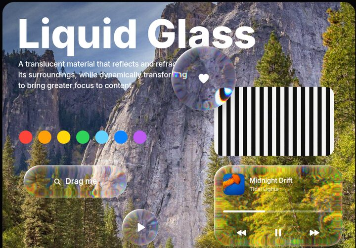
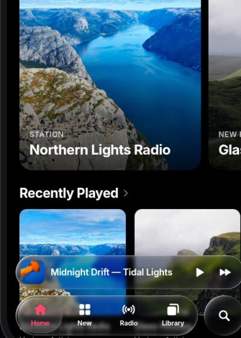
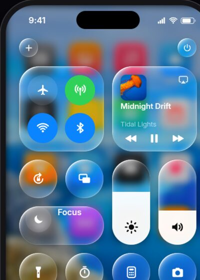
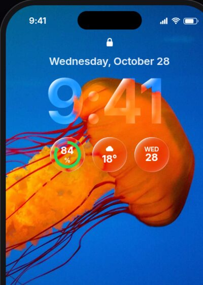

What Liquid Glass actually is
Apple announced Liquid Glass at WWDC on June 9, 2025, and shipped it across iOS 26, iPadOS 26, macOS Tahoe 26, watchOS 26 and tvOS 26. Apple calls it a translucent material that reflects and refracts its surroundings. The older materials scatter light (blur); this one bends it.
The rim of each control is curved like real glass. Light passing through it bends, so content near the edge gets compressed and pulled inward while the flat centre stays crisp.
A thin bright rim catches light from one side (plus a weaker kick on the opposite edge) and moves as you tilt the device.
The material lightens or darkens with what's under it, flips between light and dark looks, and deepens its shadow over busy content to stay legible.
Regular is the adaptive default. Clear is far more transparent, for use over rich media with a dimming layer. iOS 26.1 added a user setting: Clear or Tinted.
Glass shapes merge, split and morph like droplets (SwiftUI GlassEffectContainer). Touched controls swell, glow from the touch point, and thumbs turn into magnifying lenses.
Glass floats above content: tab bars, toolbars, sheets and controls. Shapes are capsules with corner radii concentric to the device, and bars shrink away as you scroll.
Before it: the frosted materials (iOS 7–18)
iOS 7 (2013) introduced live blur. iOS 13 formalised it into five thicknesses, from systemUltraThinMaterial to systemChromeMaterial, each with light and dark versions and paired vibrancy for text. The trick most web copies miss is the heavy saturation boost: Apple's blur makes colours richer, not greyer.
How each web technique compares
There is no CSS property for refraction. These are the options, and what each gets right:
| Technique | Refraction | Browsers | Notes |
|---|---|---|---|
CSS backdrop-filter: blur() saturate() | None | All | Perfect for the classic frosted materials. Cannot bend the backdrop, so it can't do Liquid Glass. |
SVG feTurbulence → feDisplacementMap | Random wobble | Chromium | The common "liquid glass CSS" demo. Distorts everywhere, unlike real glass, which bends only at the curved rim. |
Physics-derived displacement map (Snell's law) via backdrop-filter: url() | Real edge lensing | Chromium | Closest DOM-native result. Map must be regenerated whenever size or shape changes. Needs a CSS function before url() or Chromium drops dark pixels. |
| WebGL2 fragment shader | Full: dispersion, Fresnel, merging | All | Most physically correct, and the only way to get melting shapes. It can only refract what you paint into its texture. |
The recreations
Every page has a switcher at the top (or keys 1–5) to flip between attempts, with notes on what each one changes. Use Chrome, Edge, Brave or Arc for the refraction attempts.






Sources
- Apple Newsroom: Apple introduces a delightful and elegant new software design (June 2025)
- Apple Developer: Applying Liquid Glass to custom views
- kube.io: Liquid Glass in the browser (Snell's-law displacement maps, surface profiles)
- LogRocket: How to create Liquid Glass effects with CSS and SVG
- ekino: Liquid Glass in CSS and SVG
- AppleInsider: iOS 26 vs iOS 18